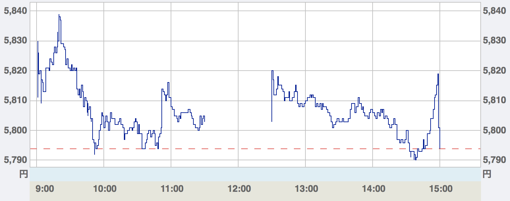

- 勝つためには分足データは絶対に必要
-
デイトレで勝っている人は、例外なく膨大な量の過去データの検証をしています。勝つためには過去のデータ使った研究が必須であること否定する人はいません。
しかし、検証に必要な5分足や1分足データはをまとめて入手することは困難でした。せいぜい証券会社から見れるデータをコピーして、少しずつ蓄積すること位しかできず、過去のデータを使った検証をするには何年にも渡ってデータを集める必要がありました。
もちろんそのような非常に面倒な作業をできる人は限られています。そのため少ないデータ量だけでトレードに向かい、豊富なデータを持った人に負けていきます。
デイトレで勝つには少なくとも数年から5年は必要と言われる理由の一つにこのデータの蓄積があります。データがあれば勝てるというわけではありませんが、少なくともデータがないと絶対に勝てません。
- 分足データは手に入る
- 実は分足データよりも細かい、ティックデータが東証から公式に販売されています。ティックデータは約定した価格と時間のデータなので、分足よりも情報が多い訳です。
しかも、値段も個人でも手の届く程度で、東証全銘柄の1年分でも数万円程度です。ではなぜ、そんな素晴らしいデータがデイトレーダーに広まっていないのでしょうか？
- エクセル形式で分足データを手に入れよう
-
東証のデータが広まっていない理由はデータの取り扱いが難しいからです。銘柄ごとに分足データが収録されているのではなく、約定した取引が銘柄ごとに並んでいるだけなのです。そのため、せっかく東証のデータを買っても検証ができませんでした。
そこで本サービスではデイトレーダーが検証しやすい、銘柄ごとの分足データをエクセル形式で提供しています。銘柄ごとのデータがエクセルで保存してあれば、気になる銘柄の過去データを容易に検証することができます。
- サービス内容
-
- 対象銘柄
- 東証全銘柄(1部,2部,ジャスダック,マザーズ)
- 対象期間
- 1982年2月分 ~
- 販売単位
- 全銘柄セットの1ヶ月単位
- 販売価格
- 全銘柄1ヶ月分当たり5,000円
- データの受け渡し方法
- メールにて、ダウンロード方法をお知らせします
ご質問は hatanodaidataservice@gmail.com へお問い合わせください。
Copyright © 2012 リンク集 All Rights Reserved.